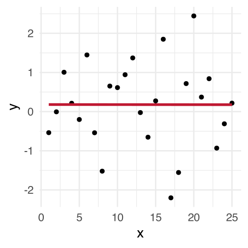
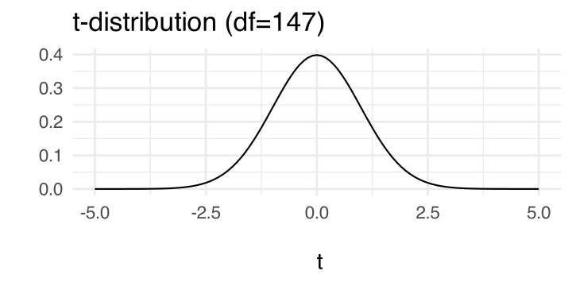
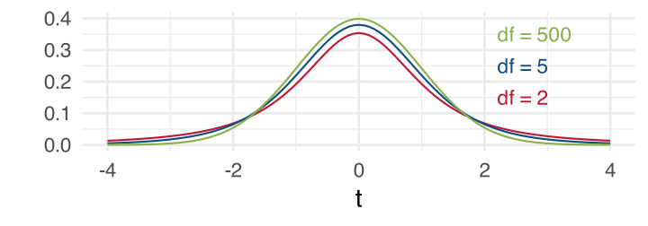
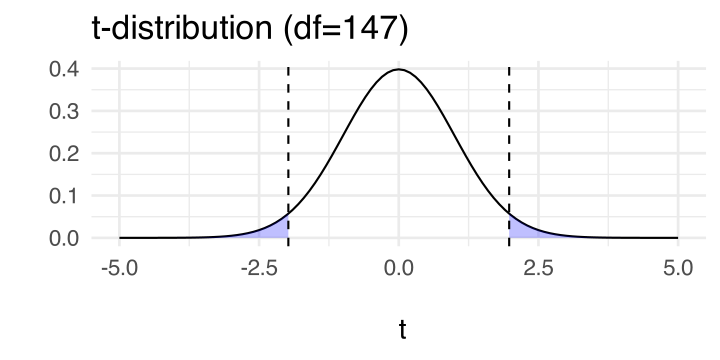
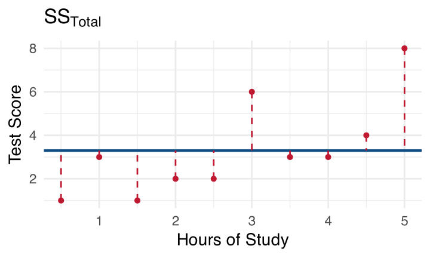
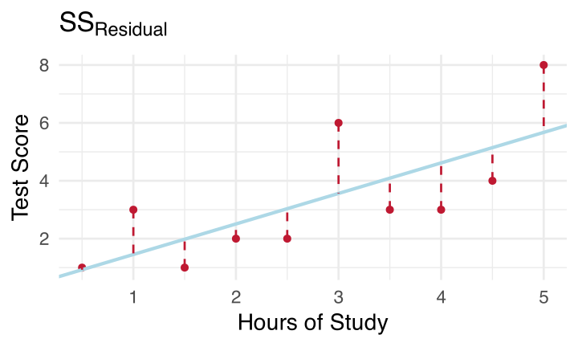
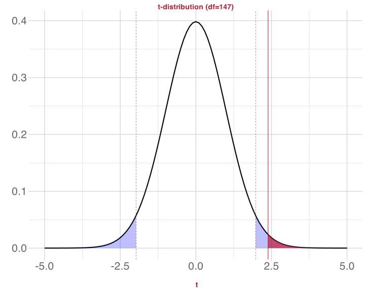

lm(score ~ hours + motivation, data = test_study2)Testing Predictors and Evaluating Linear Models
Data Analysis for Psychology in R 2
Dr. Patrick Sturt (Patrick.Sturt@ed.ac.uk)
Department of Psychology
University of Edinburgh
2026–2027
Course overview
TODO
This Week’s Learning Objectives
Understand how to interpret significance tests for \(\beta\) coefficients
Understand how to calculate and interpret \(R^2\) and adjusted- \(R^2\) as a measure of model quality
Be able to locate information on the significance of individual predictors and overall model fit in R
lmmodel output
Part 1: Recap & Overview
Recap
- Last week we expanded the general linear model equation to include multiple predictors:
\[ y_i = \beta_0 + (\beta_1 \cdot x_{1i}) + (\beta_2 \cdot x_{2i}) + (\beta_j \cdot x_{ji}) + \epsilon_i \]
- And we ran an example concerning test scores:
\[ \text{Score}_i = \beta_0 + (\beta_1 \cdot \text{Hours}_{i}) + (\beta_2 \cdot \text{Motivation}_{i}) + \epsilon_i \]
- And we looked at how to run this model in
R:
Evaluating our Model
So far we have estimated values for the key parameters of our model ( \(\beta\)s )
- Now we have to think about how we evaluate the model
Evaluating a model will consist of:
Evaluating the individual coefficients
Evaluating the overall model quality
Evaluating the model assumptions
Important: Before accepting a set of results, all three of these aspects of evaluation must be considered
- We will talk about evaluating individual coefficients and model quality today
- Model assumptions covered later in the course (Semester 1, Week 8)
Significance of Individual Effects
- A general way to ask this question would be to state:
Is our model informative about the association between X and Y?
- In the context of our example from last lecture, we could ask,
Is study time a useful predictor of test score?
This is kind of vague, what does it mean to be a “useful predictor”?
We need to turn this into a testable statistical hypothesis
Evaluating Individual Predictors
Steps in hypothesis testing:
- Research question
- Statistical hypothesis
- Define the null hypothesis
- Calculate an estimate of effect of interest
- Calculate an appropriate test statistic
- Evaluate the test statistic against the null
Research Questions and Hypotheses
Research questions are statements of what we intend to study
A good question defines:
- constructs under study
- the association being tested
- a direction of association
- target populations etc.
For example:
Does increased study time improve test scores in school-age children?
Research Questions and Hypotheses
Statistical hypotheses are testable mathematical statements
In typical testing in Psychology, we define a null hypothesis (\(H_0\)) and an alternative hypothesis (\(H_1\)).
- \(H_0\) is precise: it specifically states that the effect of interest is equal to zero.
- \(H_1\) is not specific: it simply says that the effect of interest is not equal to zero (but it makes no claims about what the effect of interest might really be equal to).
Statistical Significance: Review from DAPR1
Remember, we can only ever test the null hypothesis
We select a significance level, \(\alpha\) (typically .05)
Then we calculate the \(p\)-value associated with our test statistic
- A \(p\)-value is the probability of observing our test statistic or a value even more extreme than our test statistic, assuming that \(H_0\) is true (that is, assuming that the true effect really is zero)
If the associated \(p\) is smaller than \(\alpha\), then we reject the null
If it is larger, then we fail to reject the null
Part 2: Steps in Significance Testing
Defining the Null
In this example data, there’s no pattern in how values of \(x\) are associated with values of \(y\).
We can’t make any guesses about \(y\) based on the value of \(x\).
In this scenario, the slope \(\beta_1\) of the line associating \(x\) and \(y\) is 0.
Why is the slope 0?
- \(\beta\) gives the predicted change in \(y\) for a unit change in \(x\)
- If \(x\) and \(y\) are unrelated, then a change in \(x\) will not result in any change to the predicted value of \(y\)
- So for a unit change in \(x\), there is no change (zero change) in \(y\)
Our null hypothesis is that there is no association between \(x\) and \(y\). Formally:
\[H_0: \beta_1 = 0\] \[H_1: \beta_1 \neq 0\]

Significance tests for \(\beta\) coefficients
- The test statistic associated with \(\beta\) coefficients is a \(t\)-statistic:
\[t = \frac{\hat \beta}{SE(\hat \beta)} = \frac{\text{estimated coefficient}}{\text{standard error estimated for that coefficient}}\]
- Recall from DAPR1 that the standard error describes the spread of the sampling distribution
- The standard error \((SE)\) measures how variable the sample is
- A smaller SE suggests a more precise estimate (= good)
- If you like maths, check the appendix of these slides for details about how to compute SE by hand
Let’s work out a \(t\)-value
Call:
lm(formula = score ~ hours + motivation, data = test_study2)
Residuals:
Min 1Q Median 3Q Max
-12.9548 -2.8042 -0.2847 2.9344 13.8240
Coefficients:
Estimate Std. Error t value Pr(>|t|)
(Intercept) 6.86679 0.65473 10.488 <2e-16 ***
hours 1.37570 0.07989 17.220 <2e-16 ***
motivation 0.91634 0.38376 2.388 0.0182 *
---
Signif. codes: 0 '***' 0.001 '**' 0.01 '*' 0.05 '.' 0.1 ' ' 1
Residual standard error: 4.386 on 147 degrees of freedom
Multiple R-squared: 0.6696, Adjusted R-squared: 0.6651
F-statistic: 148.9 on 2 and 147 DF, p-value: < 2.2e-16For motivation, which we’ll represent as \(\beta_2\):
\[ t = \frac{\hat \beta_2}{SE(\hat \beta_2)} = \frac{0.9163}{0.3838} = 2.388 \]
Compare \(t\) to a Null Distribution
We have an observed \(t\)-statistic, 2.388. Now we want to find out how likely it is to observe a \(t\)-value this extreme or more extreme, assuming that \(H_0\) is true.
We know the distribution that \(t\)-values follow when \(H_0\) is true: a \(t\)-distribution.
\(t\)-distributions can vary, depending on their degrees of freedom (df):

- For \(\beta\), the null distribution is a \(t\)-distribution with \(n-k-1\) degrees of freedom
- \(n\) = sample size
- \(k\) = number of predictors (that is, the number of \(\beta\) coefficients that are not the intercept \(beta_0\))
- The additional –1 represents the intercept
\(n-k-1\) degrees of freedom
- \(n\) = sample size = 150
- \(k\) = number of predictors = 2 (
hoursandmotivation)
So: \(150 - 2 - 1 = 147\) degrees of freedom.

Use null distribution to find critical values
As with all tests we need to set our \(\alpha\): our probability of incorrectly rejecting the null hypothesis, even when it’s true
- Let’s set \(\alpha\) = 0.05 (two tailed)
- This is a 5% risk of incorrectly rejecting the null
We’ll use this \(\alpha\) value, together with the null distribution from the last slide, to find the critical values that we’ll compare our observed \(t\)-value to
Critical values

- Critical values \((t^*)\) establish a boundary for significance
- The probability that a \(t\)-value will fall within these extreme regions of the distribution given \(H_0\) is true is equal to \(\alpha\)
- Because we are performing a two-tailed test, \(\alpha\) is split between each tail, and the critical values are the edges of that shaded region (the dashed lines).
How our \(t\)-value of 2.388 compares

The shaded red area, times 2 because it’s a two-tailed test, gives us a \(p\)-value of .018.
\(p = .018\) is less than \(\alpha = 0.05\), so we can reject the null hypothesis that the association between motivation and score is equal to zero.
Part 3: Measure Model Quality using the Coefficient of Determination ( \(R^2\) )
Quality of the Overall Model
When we measure an outcome variable \(y\), there will be variability in that outcome.
- Some variability arises (we hope) because an independent variable \(x\) impacts \(y\).
- This is variability our model can explain.
- Other variability arises because there is just random variability in the world that we can’t possibly account for.
- This is variability our model cannot explain.
- Some variability arises (we hope) because an independent variable \(x\) impacts \(y\).
We quantify how good our model is based on what proportion of the variability in our data it can explain.
What proportion of variability the model can explain
To work out this proportion, we need to quantify three different kinds of variability:
| Type of variability in \(y\) | How we quantify it |
|---|---|
| Variability explained by model | \(SS_{Model}\) “Model sum of squares” |
| Variability not explained by model | \(SS_{Residual}\) “Residual sum of squares” |
| Total variability | \(SS_{Model} + SS_{Residual} = SS_{Total}\) “Total sum of squares” |
The proportion of variability that the model explains is then computed as
\[\frac{SS_{Model}}{SS_{Total}} \quad \text{or} \quad 1 - \frac{SS_{Residual}}{SS_{Total}}\]
We call this proportion the coefficient of determination and represent it as \(R^2\).
Interpreting the Coefficient of Determination
\[ \begin{align} R^2 &= \frac{SS_{Model}}{SS_{Total}}\\[1em] &= 1 - \frac{SS_{Residual}}{SS_{Total}} \\ \end{align} \]
- Quantifies the amount of variability in the outcome accounted for by the predictors
- The more variance accounted for, the better the model fit
- Represents the extent to which the prediction of \(y\) is improved when predictions are based on the linear relation between \(x\) and \(y\), compared to not considering \(x\)
Let’s see how to calculate each of these three sums of squares.
Total Sum of Squares: Distance from mean
\[SS_{Total} = \sum_{i=1}^{n}(y_i - \bar{y})^2\]
In words: For every observation, find the difference between the observed value and the mean of all observed \(y\) values, square that difference, and add up all the squares.

Residual Sum of Squares: Distance from model
\[SS_{Residual} = \sum_{i=1}^{n}(y_i - \hat{y}_i)^2\]
In words: For every observation, find the difference between that observation and the value predicted by the model, square that difference, and add up all the squares.

Model Sum of Squares: Distance between model and mean
\[SS_{Model} = \sum_{i=1}^{n}(\hat{y}_i - \bar{y})^2\]
In words: For every observation, find the difference between the predicted value for that observation and the mean of all observed \(y\) values, square that difference, and add them all up.

Our model’s \(R^2\)
In the current example, these values are:
- \(SS_\text{total}\) = 8556.06
- \(SS_\text{residual}\) = 2826.83
- \(SS_\text{model}\) = 5729.23
\[ R^2 = \frac{SS_{Model}}{SS_{Total}} \]
\[ \begin{align} R^2 &= \frac{5729.23}{8556.06} \\[.5em] &= 0.6695 \\ \end{align} \]
\(R^2\) = 0.6695 means that 66.95% of the variation in test scores is accounted for by hours of revision and student motivation
This \(R^2\) = lm()’s Multiple R-squared!
(with some rounding error)
Call:
lm(formula = score ~ hours + motivation, data = test_study2)
Residuals:
Min 1Q Median 3Q Max
-12.9548 -2.8042 -0.2847 2.9344 13.8240
Coefficients:
Estimate Std. Error t value Pr(>|t|)
(Intercept) 6.86679 0.65473 10.488 <2e-16 ***
hours 1.37570 0.07989 17.220 <2e-16 ***
motivation 0.91634 0.38376 2.388 0.0182 *
---
Signif. codes: 0 '***' 0.001 '**' 0.01 '*' 0.05 '.' 0.1 ' ' 1
Residual standard error: 4.386 on 147 degrees of freedom
Multiple R-squared: 0.6696, Adjusted R-squared: 0.6651
F-statistic: 148.9 on 2 and 147 DF, p-value: < 2.2e-16What’s Adjusted \(R^2\)?
When there are two or more predictors, \(R^2\) tends to be an inflated estimate of the corresponding population value
Due to random sampling fluctuation, even when \(R^2 = 0\) in the population, it’s value in the sample may \(\neq 0\)
In smaller samples, the fluctuations from zero will be larger on average
With more predictors, there are more opportunities to add to the positive fluctuation
We therefore compute an adjusted \(R^2\)
\[ \hat R^2 = 1 - (1 - R^2)\frac{n-1}{n-k-1} \]
- Adjusted \(R^2\) adjusts for both sample size \(n\) and number of predictors \(k\)
Our Multiple R-squared vs. Adjusted R-squared
Residual standard error: 4.386 on 147 degrees of freedom
Multiple R-squared: 0.6696, Adjusted R-squared: 0.6651
F-statistic: 148.9 on 2 and 147 DF, p-value: < 2.2e-16
Based on adjusted R-squared, hours studying and student motivation explain 66.5% of the variance in test scores
As the sample size is large and the number of predictors small, unadjusted (0.67) and adjusted R-squared (0.665) are similar
If there were even more predictors, then adjusted R-squared would be a much more accurate representation of proportion variance explained
Summary
We have an inferential test, based on a \(t\)-distribution, for the significance of \(\beta\)
We can compute confidence intervals that give us more certainty that we have captured the true value of \(\beta\)
We are more likely to find a statistically significant effect when residuals are small and we have a large sample
We can assess the degree to which our model explains variance in the outcome based on \(R^2\)
When we have multiple predictors, we should use the adjusted \(R^2\) to get a more conservative estimate
Back matter
This week
Tasks:
 Work on exercises in labs
Work on exercises in labs
 Complete the weekly quiz
Complete the weekly quiz
Get support:
 Consult the flash cards
Consult the flash cards
 Ask questions anonymously on Piazza
Ask questions anonymously on Piazza
 We really like seeing you in office hours!
We really like seeing you in office hours!
Appendix
Standard error: The maths
- The formula for the standard error of the slope is:
\[ SE(\hat \beta_j) = \sqrt{\frac{ SS_{Residual}/(n-k-1)}{\sum(x_{ij} - \bar{x_{j}})^2(1-R_{xj}^2)}} \]
- Where:
- \(SS_{Residual}\) is the residual sum of squares
- \(n\) is the sample size
- \(k\) is the number of predictors
- \(x_{ij}\) is the observed value of a predictor ( \(j\) ) for an individual ( \(i\) )
- \(\bar{x_{j}}\) is the mean of a predictor
- \(R_{xj}^2\) derives from the multiple correlation coefficient of the predictors
- \(R_{xj}^2\) captures to degree to which all of our predictors are related to each other
- For simple linear models, \(R_{xj}^2\) = 0 as there is only 1 predictor
SE( \(\hat \beta_j\) )
\[ SE(\hat \beta_j) = \sqrt{\frac{ SS_{Residual}/(n-k-1)}{\sum(x_{ij} - \bar{x_{j}})^2(1-R_{xj}^2)}} \]
We want our \(SE\) to be smaller - this means our estimate is precise
Examining the above formula we can see that:
- \(SE\) is smaller when residual variance ( \(SS_{residual}\) ) is smaller
- \(SE\) is smaller when sample size ( \(n\) ) is larger
- \(SE\) is larger when the number of predictors ( \(k\) ) is larger
- \(SE\) is larger when a predictor is strongly correlated with other predictors ( \(R_{xj}^2\) )